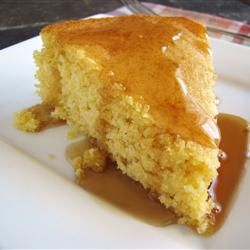

Caldilo

Made from scratch in a cast iron skillet with easy to find ingredients you have in your kitchen all ready. You will fall in love with cornbread all over again!
Ingredients
- 1/2 cup unsalted butter melted (or bacon drippings)
- 1 cup all-purpose flour
- 1 cup yellow cornmeal (or polenta)
- 1 tablespoon sugar (optional)
- 2 teaspoons baking powder (optional: yields a fluffier cornbread)
- 1/2 teaspoon baking soda
- 1/2 teaspoon salt
- 1 1/2 cup buttermilk shake before measuring
- 2 large eggs
Directions
-
Preheat the oven to 200C | 400F and position a rack in the middle.
Lightly grease a 9-inch cast iron skillet or 9-inch square baking dish with butter and place skillet/dish into the oven to heat up.
- In a large bowl, whisk together the flour, cornmeal, sugar, baking powder (If using), baking soda and salt.
- Make a well in the centre and add the buttermilk and eggs. Mix together well to combine,
then add in the slightly cooled melted butter. Mix again until 'just' combined (don't over mix).
- Carefully remove your 'hot' pan or dish from the oven with oven mitts, and pour the batter into the hot skillet or dish. Listen to that sizzle! That's what you want.
-
Bake until the cornbread begins to brown on top and a toothpick inserted in the centre comes out clean (about 20-23 minutes).
Allow to cool for about 10 minutes before slicing and serving.